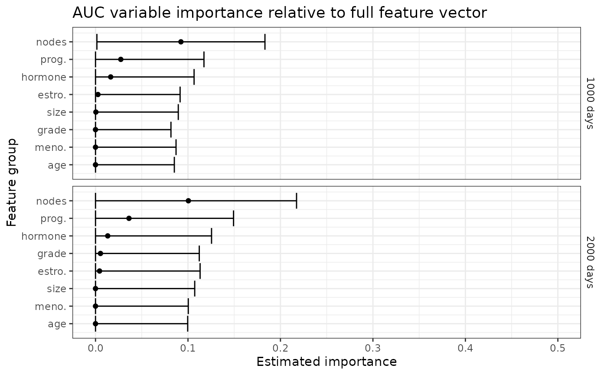
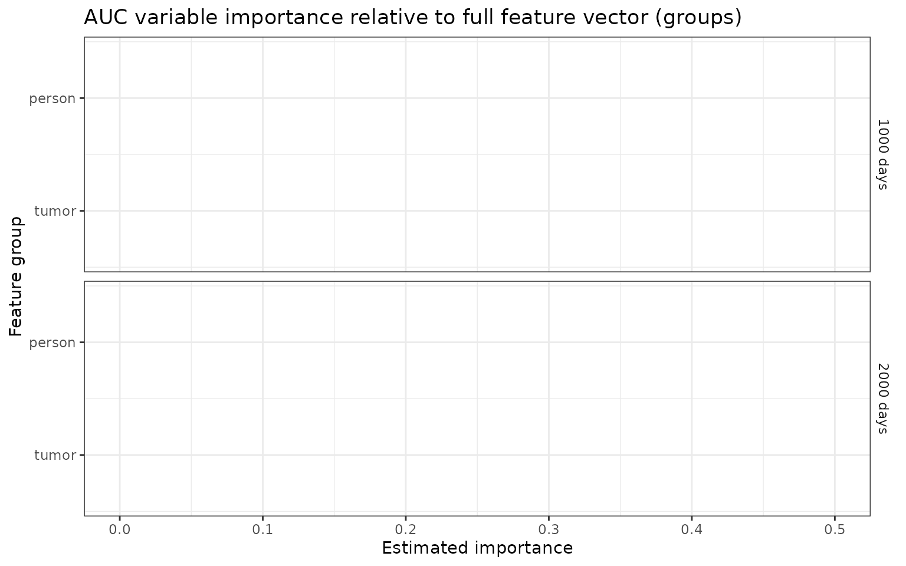
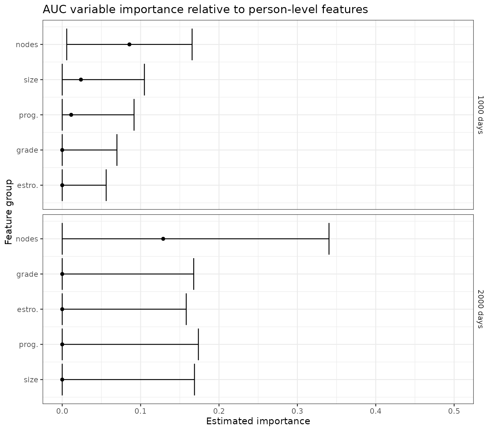
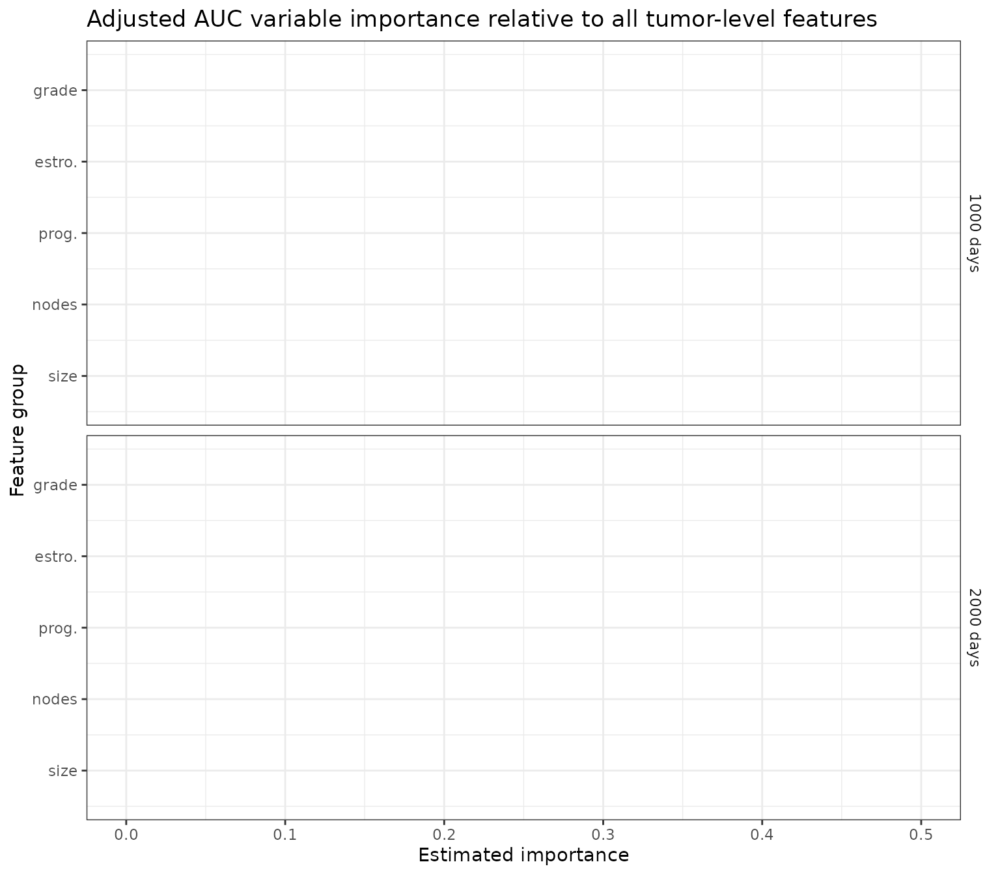

Assessing variable importance in survival analysis using machine learning
Source:vignettes/variable_importance.Rmd
variable_importance.Rmd
library(survML)
#> Loading required package: SuperLearner
#> Loading required package: nnls
#> Loading required package: gam
#> Loading required package: splines
#> Loading required package: foreach
#> Loaded gam 1.22-5
#> Super Learner
#> Version: 2.0-29
#> Package created on 2024-02-06
library(survival)
library(dplyr)
#>
#> Attaching package: 'dplyr'
#> The following objects are masked from 'package:stats':
#>
#> filter, lag
#> The following objects are masked from 'package:base':
#>
#> intersect, setdiff, setequal, union
library(ggplot2)
set.seed(72924)Introduction
The survML package includes functions that can be used
to estimate model-free, algorithm-agnostic variable importance when the
outcome of interest is subject to right censoring. Specifically, this
functionality is aimed at estimating intrinsic variable
importance, which is the population-level predictiveness potential of a
feature or group of features.
Suppose we have access to a vector of features, which we wish to use to make a prediction involving , a time-to-event outcome. We use to denote the right censoring variable. The observed data are given by , where and . For an index set , we use to denote the elements of with index in and its complement. For a given prediction task (say, estimating the probability that is smaller than some landmark time ) and prediction function , we require a measure of predictiveness. We let denote the predictiveness of under sampling from distribution . We define as the oracle prediction function excluding features with index in ; this is the best possible prediction function, according to , that uses only .
For intrinsic variable importance, we consider nested index sets and define the importance of relative to as ; this is the difference in maximum achievable predictiveness when only is excluded compared to when is excluded. We refer to this parameter as a variable importance measure (VIM). Colloquially, we refer to and as the ‘large’ and ‘small’ feature groups, respectively. Variable importance is assessed by comparing the predictiveness of a model using the large feature group to that of a model using the small feature group.
Due to right censoring, the VIM estimation procedure requires estimates of the conditional survival functions of and given , which we define pointwise as and , respectively. These functions must be estimated over the interval and may be obtained from any conditional survival estimation algorithm. This may be as simple as a Cox proportional hazards model (Cox, 1972) or parametric survival regression model, or as complex as a stacked regression procedure such as survival Super Learner (Westling et al., 2023) or global survival stacking (Wolock et al., 2024).
We also require estimates of the oracle prediction functions
and
,
which we refer to as the ‘large’ and ‘small’ oracle prediction
functions, respectively, and whose exact form depends on the chosen
predictiveness measure. For several commonly used measures, the oracle
prediction functions can be written in terms of
.
The form of the oracle prediction function for the measures included in
survML is given in the Appendix.
Example: Predicting recurrence-free survival time in cancer patients
As an example, we consider estimating variable importance for
predicting recurrence-free survival using the gbsg dataset
in the survival package. The Kaplan-Meier estimate of the
survival curve for this dataset is shown below.
data(cancer)
km_fit <- survfit(Surv(rfstime, status) ~ 1, data = gbsg)
plot(km_fit, xlab = "Time (days)", ylab = "Recurrence-free survival probability")
We will consider time-varying AUC importance using landmark times of
1000 and 2000 days. The first step is to prepare the data. We use dummy
coding for factors. This means that to assess the importance of tumor
grade, for example, which has three levels, we create two dummy
variables called tumgrad2 and tumgrad3 and
consider them as a single feature group. We also consider the feature
groups defined by tumor-level features and patient-level features.
### variables of interest
# rfstime - recurrence-free survival
# status - censoring indicator
# hormon - hormonal therapy treatment indicator
# age - in years
# meno - 1 = premenopause, 2 = post
# size - tumor size in mm
# grade - factor 1,2,3
# nodes - number of positive nodes
# pgr - progesterone receptor in fmol
# er - estrogen receptor in fmol
# create dummy variables and clean data
gbsg$tumgrad2 <- ifelse(gbsg$grade == 2, 1, 0)
gbsg$tumgrad3 <- ifelse(gbsg$grade == 3, 1, 0)
gbsg <- gbsg %>% na.omit() %>% select(-c(pid, grade))
time <- gbsg$rfstime
event <- gbsg$status
X <- gbsg %>% select(-c(rfstime, status)) # remove outcome
# find column indices of features/feature groups
X_names <- names(X)
age_index <- paste0(which(X_names == "age"))
meno_index <- paste0(which(X_names == "meno"))
size_index <- paste0(which(X_names == "size"))
nodes_index <- paste0(which(X_names == "nodes"))
pgr_index <- paste0(which(X_names == "pgr"))
er_index <- paste0(which(X_names == "er"))
hormon_index <- paste0(which(X_names == "hormon"))
grade_index <- paste0(which(X_names %in% c("tumgrad2", "tumgrad3")), collapse = ",")
tum_index <- paste0(which(X_names %in% c("size", "nodes", "pgr", "er", "tumgrad2", "tumgrad3")),
collapse = ",")
person_index <- paste0(which(X_names %in% c("age", "meno", "hormon")), collapse = ",")
feature_group_names <- c("age", "meno.", "size", "nodes",
"prog.", "estro.", "hormone",
"grade")
feature_groups <- c(age_index, meno_index, size_index, nodes_index,
pgr_index, er_index, hormon_index, grade_index)Estimating variable importance relative to all features
First, we consider the importance of each of the feature groups relative to the full feature vector. Here, the features of interest are subtracted from the full feature vector, with importance measured by the resulting loss in predictiveness.
First, we estimate the importance of age relative to the full feature
vector using the vim() function. In this case, we will
compare the AUC achieved when all features are included to the AUC when
all features except for age are included; therefore, the
large_feature_vector consists of all features, and the
small_feature_vector consists of all features except for
age.
There are three options for estimating the nuisance functions (conditional survival functions and two oracle prediction functions). Briefly, they include
- Use
survML’s built-in algorithms, which are based on usingstackG()to estimate the conditional survival functions andSuperLearner()to estimate the oracle prediction functions. - Provide a function to estimate each nuisance.
- Provide pre-computed estimates for each nuisance.
These are ordered from least to most flexible; in this vignette, we focus on (1).
To reduce runtime, we use a very small Super Learner library to
estimate the conditional survival nuisance functions, as well as the two
oracle prediction functions. We also use two-fold cross-fitting (i.e,
set cf_fold_num = 2) and two-fold cross-validation for
nuisance estimation (i.e., set V = 2 for each nuisance
estimator). In actual analyses, it is generally a good idea to use a
larger library of learners and more cross-fitting folds.
Note that we also set sample_split = TRUE. In order to
obtain valid inference under the null hypothesis of zero importance,
sample splitting is required. If this option is set to
FALSE, no p-value will be return, and caution should be
used when interpreting the resulting confidence interval.
# landmark times for AUC
landmark_times <- c(1000, 2000)
output <- vim(type = "AUC",
time = time,
event = event,
X = X,
landmark_times = landmark_times,
large_feature_vector = 1:ncol(X),
small_feature_vector = (1:ncol(X))[-as.numeric(age_index)],
conditional_surv_generator_control = list(SL.library = c("SL.mean", "SL.glm"),
V = 2,
bin_size = 0.1),
large_oracle_generator_control = list(SL.library = c("SL.mean", "SL.glm"),
V = 2),
small_oracle_generator_control = list(SL.library = c("SL.mean", "SL.glm"),
V = 2),
cf_fold_num = 2,
sample_split = TRUE,
scale_est = TRUE)
output$result$indx <- rep(age_index, nrow(output$result))
output$result$indx_name <- rep("age", nrow(output$result))
output$result
#> landmark_time est var_est cil ciu cil_1sided p
#> 1 1000 0 0.6945702 0 0.08523649 0 0.5262368
#> 2 2000 0 1.0728425 0 0.09969271 0 0.5704072
#> large_predictiveness small_predictiveness vim large_feature_vector
#> 1 0.7201543 0.7231159 AUC 1,2,3,4,5,6,7,8,9
#> 2 0.7050060 0.7149281 AUC 1,2,3,4,5,6,7,8,9
#> small_feature_vector indx indx_name
#> 1 2,3,4,5,6,7,8,9 1 age
#> 2 2,3,4,5,6,7,8,9 1 ageIf we want to examine other features, we could simply repeat the
above call to vim(), substituting in the correct
large_feature_vector and small_feature_vector.
However, this would be computationally inefficient, as many of the
nuisance functions needed to estimate the other VIMs are identical to
what was required to estimate the importance of age. In this case, the
conditional survival functions of
and
,
as well as the large oracle prediction function, are the same for each
feature group of interest; all that changes as we iterate over different
feature groups is the small oracle prediction function. Note that in
addition to the results data frame (output$results), the
vim() function also returned several other objects:
-
foldscontains the cross-fitting and sample-splitting folds that were generated by the call tovim() -
approx_timesis the grid of times that was used to estimate the quantities needed for variable importance -
conditional_surv_predscontains the estimated conditional survival functions of and -
large_oracle_predscontains the estimated large oracle prediction function (using all features) -
small_oracle_predscontains the estimated small oracle prediction function (using all features except, in this case, for age)
As we examine the importance of other features relative to the full
feature vector, we can recycle conditional_surv_preds and
large_oracle_preds (which requires us to use the same
folds and approx_times as well). We can then
look at the results for all feature groups.
# save the objects that we will reuse
saved_conditional_surv_preds <- output$conditional_surv_preds
saved_large_oracle_preds <- output$large_oracle_preds
saved_folds <- output$folds
saved_approx_times <- output$approx_times
pooled_output <- output$result # save the results for age
# iterate over other feature groups
for (i in 2:length(feature_group_names)){
indx_char <- feature_groups[i]
indx_name <- feature_group_names[i]
indx <- as.numeric(strsplit(indx_char, split = ",")[[1]])
output <- vim(type = "AUC",
time = time,
event = event,
X = X,
landmark_times = landmark_times,
approx_times = saved_approx_times,
large_feature_vector = 1:ncol(X),
small_feature_vector = (1:ncol(X))[-indx],
conditional_surv_preds = saved_conditional_surv_preds,
large_oracle_preds = saved_large_oracle_preds,
cf_folds = saved_folds$cf_folds,
ss_folds = saved_folds$ss_folds,
small_oracle_generator_control = list(SL.library = c("SL.mean", "SL.glm"),
V = 2),
sample_split = TRUE,
scale_est = TRUE)
output$result$indx <- rep(indx_char, nrow(output$result))
output$result$indx_name <- rep(indx_name, nrow(output$result))
pooled_output <- rbind(pooled_output, output$result)
}
plot_results <- function(results, plot_title){
# plot results
p_auc <- results %>%
mutate(landmark_time = factor(landmark_time,
levels = c(1000, 2000),
labels = c("1000 days", "2000 days"))) %>%
arrange(landmark_time, est) %>%
mutate(Order = row_number()) %>%
{ggplot(., aes(x = est, y = Order)) +
geom_errorbarh(aes(xmin = cil, xmax = ciu)) +
geom_point() +
theme_bw() +
xlab("Estimated importance") +
ylab("Feature group") +
xlim(c(0,0.5)) +
scale_y_continuous(
breaks = .$Order,
labels = .$indx_name,
) +
facet_wrap(~landmark_time, dir = "v", strip.position = "right", scales = "free_y", ncol = 1) +
ggtitle(plot_title)+
theme(strip.background = element_blank(),
strip.placement = "outside")
}
return(p_auc)
}
p_auc <- plot_results(pooled_output, "AUC variable importance relative to full feature vector")
p_auc
We can also look at the importance of all tumor-level features and all person-level features relative to the full feature vector.
# consider joint importance of all tumor-level and person-level features
feature_group_names2 <- c("tumor", "person")
feature_groups2 <- c(tum_index, person_index)
# repeat the analysis for feature groups
for (i in 1:length(feature_group_names2)){
indx_char <- feature_groups2[i]
indx_name <- feature_group_names2[i]
indx <- as.numeric(strsplit(indx_char, split = ",")[[1]])
output <- vim(type = "AUC",
time = time,
event = event,
X = X,
landmark_times = landmark_times,
approx_times = saved_approx_times,
large_feature_vector = 1:ncol(X),
small_feature_vector = (1:ncol(X))[-indx],
conditional_surv_preds = saved_conditional_surv_preds,
large_oracle_preds = saved_large_oracle_preds,
small_oracle_generator_control = list(SL.library = c("SL.mean", "SL.glm"),
V = 2),
cf_folds = saved_folds$cf_folds,
ss_folds = saved_folds$ss_folds,
sample_split = TRUE,
scale_est = TRUE)
output$result$indx <- rep(indx_char, nrow(output$result))
output$result$indx_name <- rep(indx_name, nrow(output$result))
if (!(i == 1)){
pooled_output <- rbind(pooled_output, output$result)
} else{
pooled_output <- output$result
}
}
p_auc <- plot_results(pooled_output, "AUC variable importance relative to full feature vector (groups)")
p_auc
Estimating variable importance relative to base model
Next, we consider the importance of each of the tumor-level features relative to a baseline set of person-level features. Here, the feature of interest is added to a baseline set of features, with importance measured by the resulting gain in predictiveness.
For this analysis, the large oracle predictions use baseline features
plus the feature of interest, and the small oracle predictions use only
baseline features. This means that we can recycle the small oracle
predictions over all feature groups. (NB: vim() takes care
of this under the hood, but it is worth noting that the large and small
oracle prediction functions for this analysis are estimated by
regressing the conditional survival function estimates given
all features on the relevant reduced feature set. As in
the previous analysis, this step is necessary to account for censoring
that may be informed by covariates, even those which are not included in
the current set of predictors.)
# For importance relative to baseline features, the 'small' model uses only person-level (baseline) features
# The 'large' model uses baseline + feature of interest
size_index <- paste0(c(size_index, person_index), collapse = ",")
nodes_index <- paste0(c(nodes_index, person_index), collapse = ",")
pgr_index <- paste0(c(pgr_index, person_index), collapse = ",")
er_index <- paste0(c(er_index, person_index), collapse = ",")
grade_index <- paste0(c(grade_index, person_index), collapse = ",")
feature_group_names <- c("size", "nodes", "prog.", "estro.", "grade")
feature_groups <- c(size_index, nodes_index,
pgr_index, er_index, grade_index)
person_index_numeric <- as.numeric(strsplit(person_index, split = ",")[[1]])
for (i in 1:length(feature_group_names)){
indx_char <- feature_groups[i]
indx_name <- feature_group_names[i]
indx <- as.numeric(strsplit(indx_char, split = ",")[[1]])
if (i == 1){
output <- vim(type = "AUC",
time = time,
event = event,
X = X,
landmark_times = landmark_times,
approx_times = saved_approx_times,
large_feature_vector = indx,
small_feature_vector = person_index_numeric,
conditional_surv_preds = saved_conditional_surv_preds,
large_oracle_generator_control = list(SL.library = c("SL.mean", "SL.glm"),
V = 2),
small_oracle_generator_control = list(SL.library = c("SL.mean", "SL.glm"),
V = 2),
cf_folds = saved_folds$cf_folds,
ss_folds = saved_folds$ss_folds,
sample_split = TRUE,
scale_est = TRUE)
saved_small_oracle_preds <- output$small_oracle_preds
} else{
output <- vim(type = "AUC",
time = time,
event = event,
X = X,
landmark_times = landmark_times,
approx_times = saved_approx_times,
large_feature_vector = indx,
small_feature_vector = person_index_numeric,
conditional_surv_preds = saved_conditional_surv_preds,
small_oracle_preds = saved_small_oracle_preds,
large_oracle_generator_control = list(SL.library = c("SL.mean", "SL.glm"),
V = 2),
cf_folds = saved_folds$cf_folds,
ss_folds = saved_folds$ss_folds,
sample_split = TRUE,
scale_est = TRUE)
}
output$result$indx <- rep(indx_char, nrow(output$result))
output$result$indx_name <- rep(indx_name, nrow(output$result))
if (!(i == 1)){
pooled_output <- rbind(pooled_output, output$result)
} else{
pooled_output <- output$result
}
}
p_auc <- plot_results(pooled_output, "AUC variable importance relative to person-level features")
p_auc
Adjustment variables
There may be covariates that are thought to influence both
and
but are not of scientific interest in terms of variable importance. (We
may think of these covariates as analogous to confounders in a causal
inference setting.) It is important to adjust for these variables in all
analyses. In the gbsg analysis, for example, we may wish to
adjust for person-level covariates age, menopausal status, and hormone
treatment therapy, but to assess variable importance using only the
predictiveness of tumor-level covariates.
We use to denote the index set of adjustment variables, and again use to denote the index set of variables of interest. The importance of relative to (i.e., the full covariate vector excluding adjustment variables) is given by .
Here, we analyze VIM relative to tumor-level covariates, while adjusting for person-level covariates. This time, the large feature vector consists of all features except for person-level features, and remains the same as we examine each of the other feature groups. Note that in the first iteration of the loop, we save the large oracle prediction function estimates to recycle for other feature group VIM estimates.
size_index <- paste0(c(size_index, person_index), collapse = ",")
nodes_index <- paste0(c(nodes_index, person_index), collapse = ",")
pgr_index <- paste0(c(pgr_index, person_index), collapse = ",")
er_index <- paste0(c(er_index, person_index), collapse = ",")
grade_index <- paste0(c(grade_index, person_index), collapse = ",")
feature_group_names <- c("size", "nodes", "prog.", "estro.", "grade")
feature_groups <- c(size_index, nodes_index,
pgr_index, er_index, grade_index)
for (i in 1:length(feature_group_names)){
indx_char <- feature_groups[i]
indx_name <- feature_group_names[i]
indx <- as.numeric(strsplit(indx_char, split = ",")[[1]])
if (i == 1){
output <- vim(type = "AUC",
time = time,
event = event,
X = X,
landmark_times = landmark_times,
approx_times = saved_approx_times,
large_feature_vector = (1:ncol(X))[-person_index_numeric],
small_feature_vector = (1:ncol(X))[-indx],
conditional_surv_preds = saved_conditional_surv_preds,
large_oracle_generator_control = list(SL.library = c("SL.mean", "SL.glm"),
V = 2),
small_oracle_generator_control = list(SL.library = c("SL.mean", "SL.glm"),
V = 2),
cf_folds = saved_folds$cf_folds,
ss_folds = saved_folds$ss_folds,
sample_split = TRUE,
scale_est = TRUE)
saved_large_oracle_preds <- output$large_oracle_preds
} else{
output <- vim(type = "AUC",
time = time,
event = event,
X = X,
landmark_times = landmark_times,
approx_times = saved_approx_times,
large_feature_vector = (1:ncol(X))[-person_index_numeric],
small_feature_vector = (1:ncol(X))[-indx],
conditional_surv_preds = saved_conditional_surv_preds,
large_oracle_preds = saved_large_oracle_preds,
small_oracle_generator_control = list(SL.library = c("SL.mean", "SL.glm"),
V = 2),
cf_folds = saved_folds$cf_folds,
ss_folds = saved_folds$ss_folds,
sample_split = TRUE,
scale_est = TRUE)
}
output$result$indx <- rep(indx_char, nrow(output$result))
output$result$indx_name <- rep(indx_name, nrow(output$result))
if (!(i == 1)){
pooled_output <- rbind(pooled_output, output$result)
} else{
pooled_output <- output$result
}
}
p_auc <- plot_results(pooled_output, "Adjusted AUC variable importance relative to all tumor-level features")
p_auc
Appendix
Some example predictiveness measures, along with the corresponding oracle prediction functions, are given below.
-
AUC:
-
Brier score:
-
Survival time MSE:
-
Proportion of explained variance (R-squared):
-
Binary classification accuracy:
-
C-index:
- For the C-index, there is, to our knowledge, no closed form of the oracle prediction function; see the preprint for more details on our proposed procedure for direct numerical optimization.
References
The survival variable importance methodology is described in
Charles J. Wolock, Peter B. Gilbert, Noah Simon and Marco Carone. “Assessing variable importance in survival analysis using machine learning.” In press, Biometrika (2024).
Other references:
David R. Cox. “Regression Models and Life-Tables.” Journal of the Royal Statistical Society: Series B (Methodological) (1972).
Ted Westling, Alex Luedtke, Peter B. Gilbert and Marco Carone. “Inference for treatment-specific survival curves using machine learning.” Journal of the American Statistical Association (2023).
Charles J. Wolock, Peter B. Gilbert, Noah Simon and Marco Carone. “A framework for leveraging machine learning tools to estimate personalized survival curves.” Journal of Computational and Graphical Statistics (2024).
Mark J. van der Laan, Eric C. Polley and Alan E. Hubbard. “Super learner.” Statistical Applications in Genetics and Molecular Biology (2007).
Daniel Rubin and Mark J. van der Laan. “A doubly robust censoring unbiased transformation.” International Journal of Biostatistics (2007).